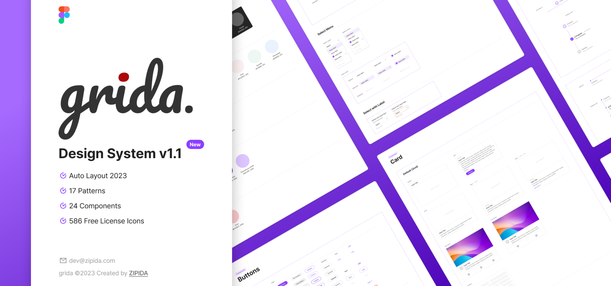
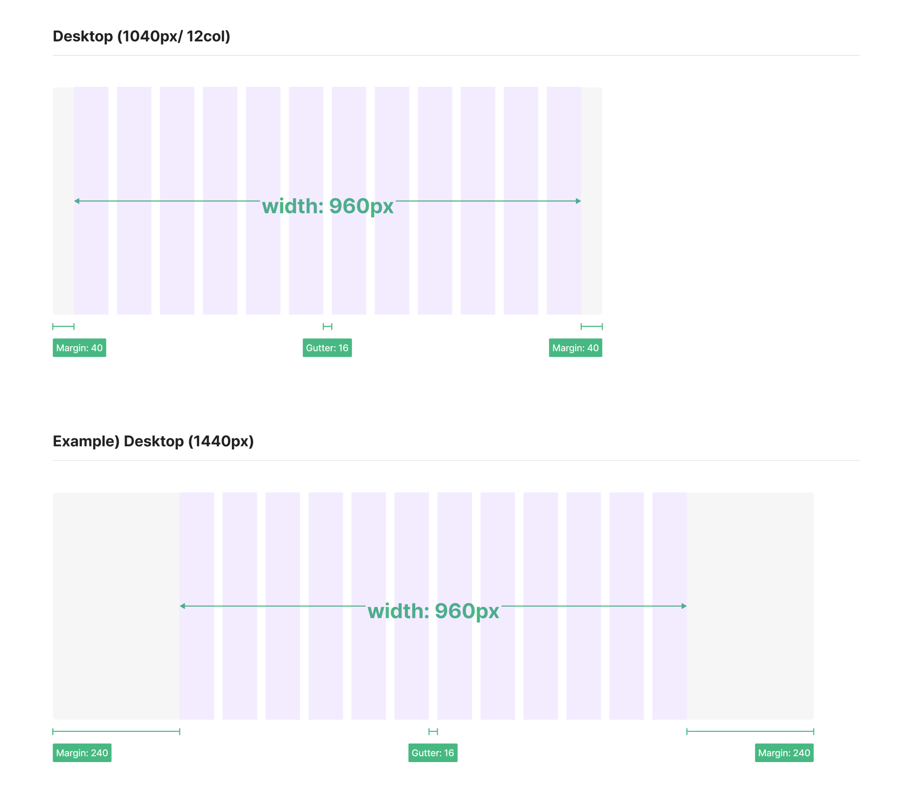
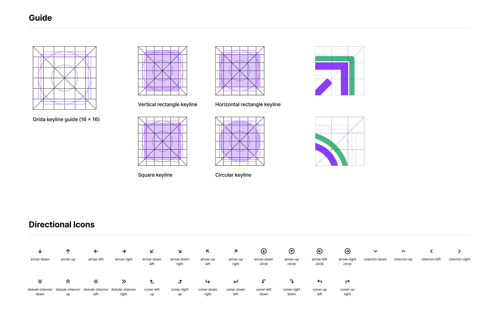
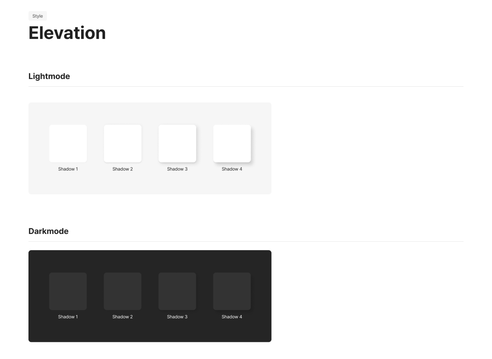
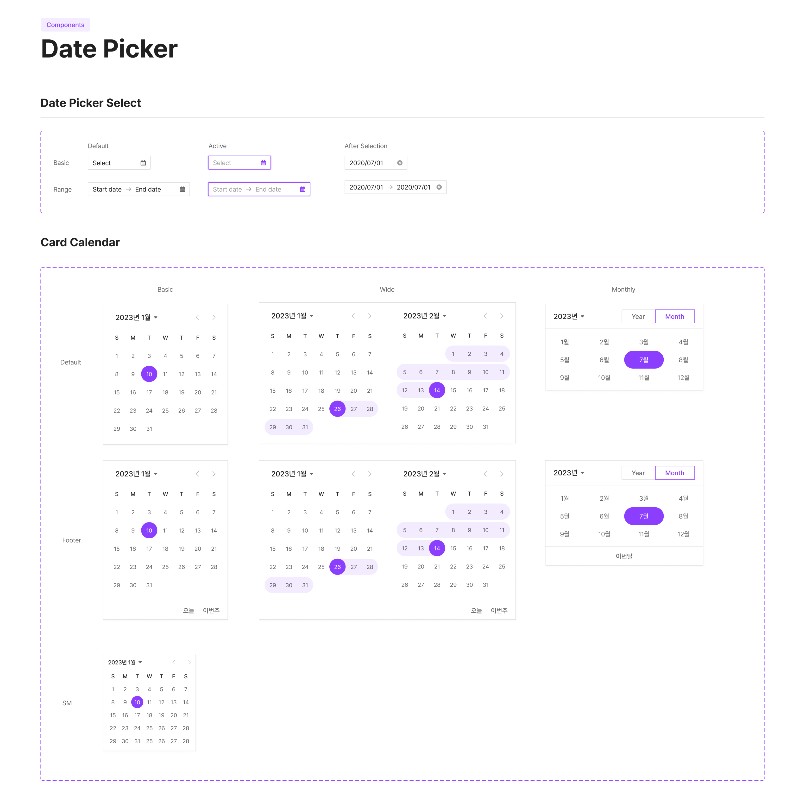

<!DOCTYPE html>
<html>
    <head>
        <meta charset="utf-8" />
        <meta name="viewport" content="width=device-width, initial-scale=1">
        <title>Design System</title>
        <link rel="stylesheet" type="text/css" href="../css/styles.css">
        <link rel="preconnect" href="https://fonts.googleapis.com">
        <link rel="preconnect" href="https://fonts.googleapis.com">
        <link rel="preconnect" href="https://fonts.gstatic.com" crossorigin>
        <link href="https://fonts.googleapis.com/css2?family=Courier+Prime:ital,wght@0,400;0,700;1,400;1,700&family=Montserrat:ital,wght@0,100..900;1,100..900&display=swap" rel="stylesheet">
        <link rel="icon" type="image/png" href="../dy_favicon.png">
    </head>
</html>
<body>
    <div class="mode-toggle">
        <button id="darkModeToggle">
            
        </button>
    </div>
    <header>
        <div class="language-selector">
            <a href="../sub_grida_kr.html">KR</a>
            <div class="lang-divider"></div>
            <a href="#" class="active">EN</a>
            <div class="lang-divider"></div>
            <a href="../cn/sub_grida_cn.html">CN</a>
        </div>
    </header>
    <div class="sub-contents">
        <a href="index_en.html">&lt; Back to Home</a>
        
        <div class="sub-contents-text">
            <div class="sub-text-title">Overview</div>
            <div class="sub-text-p">
                Grida is a design system internally developed by the design team at ZiPIDA to ensure consistency and professionalism across the company's products and solutions. The system was meticulously planned and designed to provide a cohesive brand experience across all products and solutions. It has been released as an open-source project on the Figma Community, where it has already been shared with over 1000 users. By making it available to the community, the company has the opportunity to incorporate diverse feedback and improvements, allowing the design system to evolve and achieve a higher level of completeness.
                <br/><br/>
                The company intends to actively leverage this design system in the development of future pages as well. This approach enables ZiPIDA to deliver a consistent user experience across various products and solutions while also establishing an efficient development process.
                <br/><br/>
                The choice of purple as the primary color was made to differentiate Grida from other design systems. The color selection adds a unique personality to the design, contributing to the reinforcement of the visual identity of the products. Through the strategy, the company aims to offer users a distinctive brand experience.
            </div>
        </div>
                
        
        
        
        
        <div class="sub-contents-text">
            <div class="sub-text-title">Link</div>
            <div class="sub-text-p">
                    <a href="https://www.figma.com/community/file/1214491717485403531/grida-design-system-v1-1">https://www.figma.com/community/file/1214491717485403531/grida-design-system-v1-1</a>
            </div>
        </div>
    <footer>
        <p>&copy; 2025 Dayeong Kim. All rights reserved.</p>
    </footer>

    <script src="../js/scripts.js"></script>
</body>